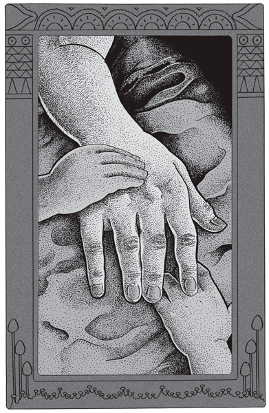

La canoa se deslizaba costeando el bosque o lo que podía parecer bosque en aquella oscuridad. Más por instinto que por indicio alguno Subercasaux sentía su proximidad, pues las tinieblas eran un solo bloque infranqueable, que comenzaban en las manos del remero y subían hasta el cenit. El hombre conocía bastante bien su río, para no ignorar dónde se hallaba; pero en tal noche y bajo amenaza de lluvia, era muy distinto atracar entre tacuaras punzantes o pajonales podridos que en su propio puertito. Y Subercasaux no iba solo en la canoa.
Las tinieblas eran un solo bloque infranqueable. |
La atmósfera estaba cargada a un grado asfixiante. En lado alguno a que se volviera el rostro, se hallaba un poco de aire que respirar. Y en ese momento, claras y distintas, sonaban en la canoa algunas gotas.
Subercasaux alzó los ojos, buscando en vano en el cielo una conmoción luminosa o la fisura de un relámpago. Como en toda la tarde, no se oía tampoco ahora un solo trueno.
“Lluvia para toda la noche”, pensó. Y volviéndose a sus acompañantes que se mantenían mudos en popa:
–Pónganse las capas –dijo brevemente–. Y sujétense bien.
En efecto, la canoa avanzaba ahora doblando las ramas, y dos o tres veces el remo de babor se había deslizado sobre un gajo sumergido. Pero aun a trueque de romper un remo, Subercasaux no perdía contacto con la fronda, pues de apartarse cinco metros de la costa podía cruzar y recruzar toda la noche delante de su puerto, sin lograr verlo.
Bordeando literalmente el bosque a flor de agua, el remero avanzó un rato aún. Las gotas caían ahora más densas, pero también con mayor intermitencia. Cesaban bruscamente, como si hubieran caído no se sabe de dónde. Y recomenzaban otra vez, grandes, aisladas y calientes, para cortarse de nuevo en la misma oscuridad y la misma depresión de atmósfera. –Sujétense bien –repitió Subercasaux a sus dos acompañantes–. Ya hemos llegado.
En efecto, acababa de entrever la escotadura de su puerto. Con dos vigorosas remadas lanzó la canoa sobre la greda, y mientras sujetaba la embarcación al piquete, sus dos silenciosos acompañantes saltaban a tierra, la que a pesar de la oscuridad se distinguía bien, por hallarse cubierta de miríadas de gusanillos luminosos que hacían ondular el piso con sus fuegos rojos y verdes.
Hasta lo alto de la barranca, que los tres viajeros treparon bajo la lluvia por fin uniforme y maciza, la arcilla empapada fosforeció. Pero luego, las tinieblas los aislaron de nuevo; y entre ellas, la búsqueda del sulky que habían dejado caído sobre las varas.
La frase hecha: “No se ve ni las manos puestas bajo los ojos” es exacta. Y en tales noches, el momentáneo fulgor de un fósforo no tiene otra utilidad que apretar en seguida la tiniebla mareante; hasta hacernos perder el equilibrio.
Hallaron sin embargo el sulky, mas no el caballo. Y dejando de guardia junto a una rueda a sus dos acompañantes, que inmóviles bajo el capuchón caído crepitaban de lluvia, Subercasaux fue espinándose hasta el fondo de la picada, donde halló a su caballo, naturalmente enredado en las riendas.
No había Subercasaux empleado más de veinte minutos en buscar y traer el animal; pero cuando al orientarse en las cercanías del sulky con un:
–¿Están ahí, chiquitos? –oyó:
–Sí, piapiá.
Subercasaux se dio por primera vez cuenta exacta, en esa noche, de que los dos compañeros que había abandonado a la noche y a la lluvia eran sus dos hijos, de cinco y seis años, cuyas cabezas no alcanzaban al cubo de la rueda, y que juntitos y chorreando agua del capuchón esperaban tranquilos a que su padre volviera.
Regresaban por fin a casa, contentos y charlando. Pasados los instantes de inquietud o peligro, la voz de Subercasaux era muy distinta de aquélla con que hablaba a sus chiquitos cuando debía dirigirse a ellos como a hombres. Su voz había bajado dos tonos; y nadie hubiera creído allí, al oír la ternura de las voces que quien reía entonces con las criaturas era el mismo hombre de acento duro y breve de media hora antes. Y quienes en verdad dialogaban ahora eran Subercasaux y su chica, pues el varoncito –el menor– se había dormido en las rodillas del padre.
Subercasaux se levantaba generalmente al aclarar; y aunque lo hacía sin ruido, sabía bien que en el cuarto inmediato su chico, tan madrugador como él, hacía rato que estaba con los ojos abiertos esperando sentir a su padre para levantarse. Y comenzaba entonces la invariable fórmula de saludo matinal, de uno a otro cuarto:
–¡Buen día, piapiá!
–¡Buen día, mi hijito querido!
–¡Buen día, piapiacito adorado!
–¡Buen día, corderito sin mancha!
–¡Buen día, ratoncito sin cola!
–¡Coaticito mío!
–¡Piapiá tatucito!
–¡Carita de gato!
–¡Colita de víbora!
Y en este pintoresco estilo, un buen rato más. Hasta que ya vestidos, se iban a tomar café bajo las palmeras, en tanto que la mujercita continuaba durmiendo como una piedra, hasta que el sol en la cara la despertaba.
Subercasaux, con sus dos chiquitos, hechura suya en sentimientos y educación, se consideraba el padre más feliz de la Tierra. Pero lo había conseguido a costa de dolores más duros de los que suelen conocer los hombres casados.
Bruscamente, como sobrevienen las cosas que no se conciben por su aterradora injusticia, Subercasaux perdió a su mujer. Quedó de pronto solo, con dos criaturas que apenas lo conocían, y en la misma casa por él construida y por ella arreglada, donde cada clavo y cada pincelada en la pared era un agudo recuerdo de compartida felicidad.
Supo al día siguiente, al abrir por casualidad el ropero, lo que es ver de golpe la ropa blanca de su mujer ya enterrada; y colgado, el vestido que ella no tuvo tiempo de estrenar.
Conoció la necesidad perentoria y fatal, si se quiere seguir viviendo, de destruir hasta el último rastro del pasado, cuando quemó con los ojos fijos y secos las cartas por él escritas a su mujer, y que ella guardaba desde novia con más amor que sus trajes de ciudad. Y esa misma tarde supo, por fin, lo que es retener en los brazos, deshecho al fin de sollozos, a una criatura que pugna por desasirse para ir a jugar con el chico de la cocinera.
Duro, terriblemente duro aquello… Pero ahora reía con sus dos cachorros que formaban con él una sola persona, dado el modo curioso como Subercasaux educaba a sus hijos.
Las criaturas, en efecto, no temían a la oscuridad, ni a la soledad, ni a nada de lo que constituye el terror de los bebés criados entre las polleras de la madre. Más de una vez, la noche cayó sin que Subercasaux hubiera vuelto del río, y las criaturas encendieron el farol de viento a esperarlo sin inquietud. O se despertaban solos en medio de una furiosa tormenta que los enceguecía a través de los vidrios, para volverse a dormir en seguida, seguros y confiados en el regreso de papá.
No temían a nada, sino a lo que su padre les advertía debían temer, y en primer grado, naturalmente, figuraban las víboras. Aunque libres, respirando salud y deteniéndose a mirarlo todo con sus grandes ojos de cachorros alegres, no hubieran sabido qué hacer un instante sin la compañía del padre. Pero si éste, al salir, les advertía que iba a estar tal tiempo ausente, los chicos se quedaban entonces contentos a jugar entre ellos. De igual modo, si en sus mutuas y largas andanzas por el monte o el río, Subercasaux debía alejarse minutos u horas, ellos improvisaban en seguida un juego, y lo aguardaban indefectiblemente en el mismo lugar, pagando así, con ciega y alegre obediencia, la confianza que en ellos depositaba su padre.
Galopaban a caballo por su cuenta, y esto desde que el varoncito tenía cuatro años. Conocían perfectamente –como toda criatura libre– el alcance de sus fuerzas, y jamás lo sobrepasaban. Llegaban a veces, solos, hasta el Yabebirí, al acantilado de arenisca rosa.
–Cerciórense bien del terreno, y siéntense después –les había dicho su padre.
Con sus dos cachorros que formaban con él una sola persona. |
El acantilado se alza perpendicular a veinte metros de un agua profunda y umbría que refresca las grietas de su base. Allá arriba, diminutos, los chicos de Subercasaux se aproximaban tanteando las piedras con el pie. Y seguros, por fin, se sentaban a dejar jugar las sandalias sobre el abismo.
Naturalmente, todo esto lo había conquistado Subercasaux en etapas sucesivas y con las correspondientes angustias.
–Un día se me mata un chico –decíase–. Y por el resto de mis días pasaré preguntándome si tenía razón al educarlos así.
Sí, tenía razón. Y entre los escasos consuelos de un padre que queda solo con huérfanos, es el más grande el de poder educar a los hijos de acuerdo con una sola línea de carácter.
Subercasaux era, pues, feliz; y las criaturas sentíanse entrañablemente ligadas a aquel hombre que jugaba horas enteras con ellos, les enseñaba a leer en el suelo con grandes letras rojas y pesadas de minio, y les cosía las rasgaduras de sus bombachas con sus tremendas manos endurecidas.
De coser bolsas en el Chaco, cuando fue allá plantador de algodón, Subercasaux había conservado la costumbre y el gusto de coser. Cosía su ropa, la de sus chicos, las fundas del revólver, las velas de su canoa, todo con hilo de zapatero, y a puntada por nudo. De modo que sus camisas podían abrirse por cualquier parte, menos donde él había puesto su hilo encerado.
En punto a juegos, las criaturas estaban acordes en reconocer en su padre a un maestro, particularmente en su modo de correr en cuatro patas, tan extraordinario que los hacía en seguida gritar de risa.
Como a más de sus ocupaciones fijas, Subercasaux tenía inquietudes experimentales, que cada tres meses cambiaban de rumbo, sus hijos, constantemente a su lado, conocían una porción de cosas que no es habitual conozcan las criaturas de esa edad. Habían visto –y ayudado a veces– a disecar animales, fabricar creolina, extraer caucho del monte para pegar sus impermeables; habían visto teñir las camisas de su padre de todos los colores, construir palancas de ocho mil kilos para estudiar cementos; fabricar superfosfatos, vino de naranja, secadora de tipo Mayfarth, y tender, desde el monte al búngalo, un alambrecarril suspendido a diez metros del suelo, por cuyas vagonetas los chicos bajaban volando hasta la casa.
Por aquel tiempo había llamado la atención de Subercasaux un yacimiento o filón de arcilla blanca, que la última gran bajada del Yabebirí dejara a descubierto. Del estudio de dicha arcilla había pasado a las otras del país, que cocía en sus hornos de cerámica, naturalmente construidos por él. Y si había de buscar índices de cocción, vitrificación y demás, con muestras amorfas, prefería ensayar con cachorros, caretas y animales fantásticos, en todo lo cual sus chicos lo ayudaban con gran éxito.
De noche, y en las tardes muy oscuras de temporal, entraba la fábrica en gran movimiento. Subercasaux encendía temprano el horno, y los ensayistas, encogidos por el frío y restregándose las manos, sentábanse a su calor a modelar.
Pero el horno chico de Subercasaux levantaba fácilmente mil grados en dos horas; y en cada vez que a este punto se abría su puerta para alimentarlo, partía del hogar albeante un verdadero golpe de fuego que quemaba las pestañas. Por lo cual, los ceramistas retirábanse a un extremo del taller, hasta que el viento helado que se filtraba silbando por entre las tacuaras de la pared, los llevaba otra vez con mesa y todo a caldearse de espaldas al horno.
Salvo las piernas desnudas de los chicos, que eran las que recibían ahora las bocanadas de fuego, todo marchaba bien. Subercasaux sentía debilidad por los cacharros prehistóricos; la nena modelaba con preferencia sombreros de fantasía, y el varoncito hacía, indefectiblemente, víboras.
A veces, sin embargo, el ronquido monótono del horno no los animaba bastante, y recurrían entonces al gramófono, que tenía los mismos discos desde que Subercasaux se casó, y que los chicos habían aporreado con toda clase de púas, clavos, tacuaras y espinas que ellos mismos aguzaban. Cada uno se encargaba por turno de administrar la máquina, lo cual consistía en cambiar automáticamente de disco sin levantar siquiera los ojos de la arcilla y reanudar enseguida el trabajo. Cuando habían pasado todos los discos, tocaba a otro el turno de repetir exactamente lo mismo. No oían ya la música por resaberla de memoria; pero los entretenía el ruido.
A las diez, los ceramistas daban por terminada su tarea y se levantaban a proceder por primera vez al examen crítico de sus obras de arte, pues antes de haber concluido todos, no se permitía el menor comentario. Y era de ver, entonces, el alborozo ante las fantasías ornamentales de la mujercita, y el entusiasmo que levantaba la obstinada colección de víboras del nene. Tras lo cual Subercasaux extinguía el fuego del horno, y todos de la mano atravesaban corriendo la noche helada hasta su casa.
Tres días después del paseo nocturno que hemos contado, Subercasaux quedó sin sirvienta; y este incidente, ligero y sin consecuencias en cualquier otra parte, modificó hasta el extremo la vida de los tres desterrados.
En los primeros momentos de su soledad, Subercasaux había contado para criar a sus hijos con la ayuda de una excelente mujer, la misma cocinera que lloró y halló la casa demasiado sola a la muerte de su señora.
Al mes siguiente se fue, y Subercasaux pasó todas las penas para reemplazarla con tres o cuatro hoscas muchachas arrancadas al monte, y que sólo se quedaban tres días por hallar demasiado duro el carácter del patrón.
Subercasaux, en efecto, tenía alguna culpa y lo reconocía. Hablaba con las muchachas apenas lo necesario para hacerse entender; y lo que decía tenía precisión y lógica demasiado masculinas. Al barrer aquéllas el comedor, por ejemplo, les advertía que barrieran también alrededor de cada pata de la mesa. Y esto, expresado brevemente, exasperaba y cansaba a las muchachas.
Por el espacio de tres meses no pudo obtener siquiera una chica que le lavara los platos. Y en estos tres meses Subercasaux aprendió algo más que a bañar a sus chicos.
Aprendió, no a cocinar, porque ya lo sabía, sino a fregar ollas con la misma arena del patio, en cuclillas y al viento helado que le amorataba las manos. Aprendió a interrumpir a cada instante sus trabajos para correr a retirar la leche del fuego o abrir el horno humeante; y aprendió también a traer de noche tres baldes de agua del pozo –ni uno menos– para lavar su vajilla.
Este problema de los tres baldes ineludibles constituyó una de sus pesadillas, y tardó un mes en darse cuenta de que le eran indispensables. En los primeros días, naturalmente, había aplazado la limpieza de ollas y platos, que amontonaba uno al lado de otro en el suelo, para limpiarlos todos juntos. Pero después de perder una mañana entera en cuclillas raspando cacerolas quemadas –todas se quemaban–, optó por cocinar-comer-fregar, tres sucesivas cosas cuyo deleite tampoco conocen los hombres casados.
No le quedaba, en verdad, tiempo para nada, máxime en los breves días de invierno. Subercasaux había confiado a los chicos el arreglo de las dos piezas, que ellos desempeñaban bien que mal. Pero no se sentía él mismo con ánimo suficiente para barrer el patio, tarea científica, radial, circular y exclusivamente femenina, que a pesar de saberla Subercasaux base del bienestar en los ranchos del monte, sobrepasaba su paciencia.
En esa suelta arena sin remover, convertida en laboratorio de cultivo por el tiempo cruzado de lluvias y sol ardiente, los piques se propagaron de tal modo que se los veía trepar por los pies descalzos de los chicos. Subercasaux, aunque siempre de stromboot, pagaba pesado tributo a los piques. Y rengo casi siempre, debía pasar una hora entera después de almorzar con los pies de su chico entre las manos, en el corredor y salpicado de lluvia, o en el patio cegado por el sol. Cuando concluía con el varoncito, le tocaba el turno a sí mismo; y al incorporarse por fin, curvaturado, el nene lo llamaba, porque tres nuevos piques le habían taladrado a medias la piel de los pies.
La mujercita parecía inmune, por ventura; no había modo de que sus uñitas tentaran a los piques, de diez de los cuales siete correspondían de derecho al nene, y sólo tres a su padre. Pero estos tres resultaban excesivos para un hombre cuyos pies eran el resorte de su vida montés.
Los piques son, por lo general, más inofensivos que las víboras, las uras y los mismos barigüís. Caminan empinados por la piel, y de pronto la perforan con gran rapidez, llegan a la carne viva, donde fabrican una bolsita que llenan los huevos. Ni la extracción del pique o la nidada suelen ser molestas, ni sus heridas se echan a perder más de lo necesario. Pero de cien piques limpios hay uno que aporta una infección, y cuidado entonces con ella.
Subercasaux no lograba reducir una que tenía en un dedo, en el insignificante meñique del pie derecho. De un agujerillo rosa había llegado a una grieta tumefacta y dolorosísima, que bordeaba la uña. Yodo, bicloruro, agua oxigenada, formol, nada había dejado de probar. Se calzaba, sin embargo, pero no salía de casa; y sus inacabables fatigas de monte se reducían ahora en las tardes de lluvia, a lentos y taciturnos paseos alrededor del patio, cuando al entrar el sol el cielo se despejaba, y el bosque, recortado a contraluz como sombra chinesca, se aproximaba en el aire purísimo hasta tocar los mismos ojos.
Subercasaux reconocía que en otras condiciones de vida habría logrado vencer la infección, la que sólo pedía un poco de descanso. El herido dormía mal, agitado por escalofríos y vivos dolores en las altas horas. Al rayar el día, caía por fin en un sueño pesadísimo, y en ese momento hubiera dado cualquier cosa por quedar en cama hasta las ocho, siquiera. Pero el nene seguía en invierno tan madrugador como en verano y Subercasaux se levantaba achuchado a encender el Primus y preparar el café. Luego el almuerzo, el restregar ollas. y por diversión, al mediodía, la inacabable historia de los piques de su chico.
–Esto no puede continuar así –acabó por decirse Subercasaux–. Tengo que conseguir a toda costa una muchacha.
¿Pero cómo? Durante sus años de casado esta terrible preocupación de la sirvienta había constituido una de sus angustias periódicas. Las muchachas llegaban y se iban, como lo hemos dicho, sin decir por qué, y esto cuando había una dueña de casa. Subercasaux abandonaba todos sus trabajos y por tres días no bajaba del caballo, galopando por las picadas desde Apariciocué a San Ignacio, tras de la más inútil muchacha que quisiera lavar los pañales. Un mediodía, por fin, Subercasaux desembocaba del monte con una aureola de tábanos en la cabeza, y el pescuezo del caballo deshilado en sangre; pero triunfante. La muchacha llegaba al día siguiente en ancas de su padre, con un atado; y al mes justo se iba con el mismo atado, a pie. Y Subercasaux dejaba otra vez el machete o la azada para ir a buscar su caballo, que ya sudaba al sol sin moverse.
Malas aventuras aquellas, que le habían dejado un amargo sabor y que debían comenzar otra vez. ¿Pero hacia dónde?
Subercasaux había ya oído en sus noches de insomnio el tronido, lejano del bosque, abatido por la lluvia. La primavera suele ser seca en Misiones, y muy lluvioso el invierno. Pero cuando el régimen se invierte –y esto es siempre de esperar en el clima de Misiones–, las nubes precipitan en tres meses un metro de agua, de los mil quinientos milímetros que deben caer en el año.
Hallábanse ya casi sitiados. El Horqueta, que corta el camino hacia la costa del Paraná, no ofrecía entonces puente alguno, y sólo daba paso en el vado carretero, donde el agua caía en espumoso rápido sobre piedras redondas y movedizas, que los caballos pisaban estremecidos. Esto, en tiempos normales; porque cuando el riacho se ponía a recoger las aguas de siete días de temporal, el vado quedaba sumergido bajo cuatro metros de agua veloz, estirada en hondas líneas que se cortaban y enroscaban de pronto en un remolino. Y los pobladores del Yabebirí, detenidos a caballo ante el pajonal inundado, miraban pasar venados muertos, que iban girando sobre sí mismos. Y así por diez o quince días.
El Horqueta daba aún paso cuando Subercasaux se decidió a salir; pero en su estado no se atrevía a recorrer a caballo tal distancia. Y en el fondo, hacia el arroyo del Cazador, ¿qué podía hallar?
Recordó entonces a un muchachón que había tenido una vez, listo y trabajador como pocos, quien le había manifestado riendo, el mismo día de llegar, y mientras fregaba una sartén en el suelo, que él se quedaría un mes, porque su patrón lo necesitaba; pero ni un día más, porque ése no era un trabajo para hombres. El muchacho vivía en la boca del Yabebirí, frente a la isla del Toro; lo cual representaba un serio viaje, porque si el Yabebirí se desciende y se remonta jugando, ocho horas continuas de remo aplastan los dedos de cualquiera que ya no está en tren.
Subercasaux se decidió, sin embargo. Y a pesar del tiempo amenazante, fue con sus chicos hasta el río, con el aire feliz de quien ve por fin el cielo abierto. Las criaturas besaban a cada instante la mano de su padre, como era hábito en ellos cuando estaban muy contentos. A pesar de sus pies y el resto, Subercasaux conservaba todo su ánimo para sus hijos, pero para éstos era cosa muy distinta atravesar con su piapiá el monte enjambrado de sorpresas, y correr luego descalzos a lo largo de la costa, sobre el barro caliente y elástico del Yabebirí.
Allí les esperaba lo ya previsto: la canoa llena de agua, que fue preciso desagotar con el achicador habitual, y con los mates guardabichos que los chicos llevaban siempre en bandolera cuando iban al monte.
La esperanza de Subercasaux era tan grande que no se inquietó lo necesario ante el aspecto equívoco del agua enturbiada, en un río que habitualmente da fondo claro a los ojos hasta dos metros.
“Las lluvias –pensó– no se han obstinado aún con el sudeste… Tardará un día o dos en crecer.”
Prosiguieron trabajando. Metidos en el agua a ambos lados de la canoa, baldeaban de firme. Subercasaux, en un principio, no se había atrevido a quitarse las botas, que el lodo profundo retenía, al punto de ocasionarle buenos dolores arrancar el pie. Descalzose, por fin, y, con los pies libres y hundidos como cuñas en el barro pestilente, concluyó de agotar la canoa, la dio vuelta y le limpió los fondos, todo en dos horas de febril actividad.
Listos, por fin, partieron. Durante una hora, la canoa se deslizó más velozmente de lo que el remero hubiera querido. Remaba mal, apoyado en un solo pie, y el talón desnudo herido por el filo del soporte. Y asimismo avanzaba aprisa, porque el Yabebirí corría ya. Los palitos hinchados de burbujas, que comenzaban a orlear los remansos, y el bigote de las pajas atracadas en un raigón hicieron por fin comprender a Subercasaux lo que iba a pasar si demoraba un segundo en virar de proa hacia su puerto.
Sirvienta, muchacho –¡descanso, por fin!…–, nuevas esperanzas perdidas. Remó, pues, sin perder una palada. Las cuatro horas que empleó en remontar, torturado de angustias y fatiga, un río que había descendido en una hora, bajo una atmósfera tan enrarecida, que la respiración anhelaba en vano, sólo él pudo apreciarlas a fondo. Al llegar a su puerto, el agua espumosa y tibia había subido ya dos metros sobre la playa. Y por el canal bajaban a medio hundir ramas secas, cuyas puntas emergían y se hundían balanceándose.
Los viajeros llegaron al búngalo cuando ya estaba casi oscuro, aunque eran apenas las cuatro, y a tiempo que el cielo, con un solo relámpago desde el cenit al río, descargaba por fin su inmensa provisión de agua. Cenaron enseguida y se acostaron rendidos, bajo el estruendo del zinc, que el diluvio martilló toda la noche con implacable violencia.
Al rayar el día, un hondo escalofrío despertó al dueño de casa. Hasta ese momento había dormido con pesadez de plomo. Contra lo habitual, desde que tenía el dedo herido, apenas le dolía el pie, no obstante las fatigas del día anterior. Echose encima el impermeable tirado en el respaldo de la cama, y trató de dormir de nuevo.
Imposible. El frío lo traspasaba. El hielo interior irradiaba hacia afuera, a todos los poros convertidos en agujas de hielo erizadas, de lo que adquiría noción al mínimo roce con su ropa. Apelotonado, recorrido a lo largo de la médula espinal por rítmicas y profundas corrientes de frío, el enfermo vio pasar las horas sin lograr calentarse. Los chicos, felizmente, dormían aún.
“En el estado en que estoy, no se hacen pavadas como la de ayer –se repetía–. Estas son las consecuencias.”
Como un sueño lejano, como una dicha de inapreciable rareza que alguna vez poseyó, se figuraba que podía quedar todo el día en cama, caliente y descansado, por fin, mientras oía en la mesa el ruido de las tazas de café con leche que la sirvienta –aquella primera gran sirvienta– servía a los chicos…
¡Quedar en cama hasta las diez, siquiera…! En cuatro horas pasaría la fiebre, y la misma cintura no le dolería tanto… ¿Qué necesitaba en suma para curarse? Un poco de descanso, nada más.Él mismo se lo había repetido diez veces…
Y el día avanzaba, y el enfermo creía oír el feliz ruido de las tazas, entre las pulsaciones profundas de su sien de plomo. ¡Qué dicha oír aquel ruido…! Descansaría un poco, por fin…
–¡Piapiá!
–Mi hijo querido…
–¡Buen día piapiacito adorado! ¿No te levantaste todavía? Es tarde, piapiá.
–Sí, mi vida, ya me estaba levantando.
Y Subercasaux se vistió a prisa, echándose en cara su pereza que lo había hecho olvidar del café de sus hijos.
El agua había cesado, por fin, pero sin que el menor soplo de viento barriera la humedad ambiente. A mediodía la lluvia recomenzó, la lluvia tibia, calma y monótona, en que el valle del Horqueta, los sembrados y los pajonales se diluían en una brumosa y tristísima capa de agua.
El enfermo vio pasar las horas sin lograr calentarse. |
Después de almorzar, los chicos se entretuvieron en rehacer su provisión de botes de papel que habían agotado la tarde anterior. Hacían cientos de ellos, que acondicionaban unos dentro de otros como cartuchos, listos para ser lanzados en la estela de la canoa, en el próximo viaje. Subercasaux aprovechó la ocasión para tirarse un rato en la cama, donde recuperó en seguida su postura de gatillo, manteniéndose inmóvil con las rodillas subidas hasta el pecho. De nuevo, en la sien, sentía un peso enorme que la adhería a la almohada, al punto de que ésta parecía formar parte integrante de su cabeza. ¡Qué bien estaba así! ¡Quedar uno, diez, cien días sin moverse! El murmullo monótono del agua en el zinc lo arrullaba, y en su rumor oía distintamente, hasta arrancarle una sonrisa, el tintineo de los cubiertos que la sirvienta manejaba a toda prisa en la cocina. ¡Qué sirvienta la suya…! Y oía el ruido de los platos, docenas de platos, tazas y ollas que las sirvientas –¡eran diez ahora!– raspaban y frotaban con rapidez vertiginosa. ¡Qué gozo de hallarse bien caliente, por fin, en la cama, sin ninguna, ninguna preocupación…! ¿Cuándo, en qué época anterior había él soñado estar enfermo, con una preocupación terrible…? ¡Qué zonzo había sido…! y qué bien se está así, oyendo el ruido de centenares de tazas limpísimas.
–¡Piapiá!
–Chiquita…
–¡Ya tengo hambre, piapiá!
–Sí, chiquita; en seguida…
Y el enfermo se fue a la lluvia a aprontar el café a sus hijos.
Sin darse cuenta precisa de lo que había hecho esa tarde, Subercasaux vio llegar la noche con hondo deleite. Recordaba, sí, que el muchacho no había traído esa tarde la leche, y que él había mirado un largo rato su herida, sin percibir en ella nada de particular.
Cayó en la cama sin desvestirse siquiera; y en breve tiempo la fiebre lo arrebató otra vez. El muchacho que no había llegado con la leche… ¡Qué locura…! Se hallaba ahora bien, perfectamente bien, descansando.
Con sólo unos días más de descanso, con unas horas, nada más, se curaría. ¡Claro! ¡Claro…! Hay una justicia a pesar de todo… y también un poquito de recompensa… para quien había querido a sus hijos como él… Pero se levantaría sano. Un hombre puede enfermarse a veces… y necesitar un poco de descanso. ¡Y cómo descansaba ahora, al arrullo de la lluvia en el zinc…! ¿Pero no habría pasado un mes ya…? Debía levantarse.
El enfermo abrió los ojos. No veía sino tinieblas, agujereadas por puntos fulgurantes que se retraían e hinchaban alternativamente, avanzando hasta sus ojos en velocísimo vaivén.
–Debo tener fiebre muy alta –se dijo el enfermo.
Y encendió sobre el velador el farol de viento. La mecha, mojada, chisporroteó largo rato, sin que Subercasaux apartara los ojos del techo. De lejos, lejísimo llegábale el recuerdo de una noche semejante en que él se hallaba muy, muy enfermo… ¡Qué tontería…! Se hallaba sano, porque cuando un hombre nada más que cansado tiene la dicha de oír desde la cama el tintineo vertiginoso del servicio en la cocina, es porque la madre vela por sus hijos…
Despertose de nuevo. Vio de reojo el farol encendido, y tras un concentrado esfuerzo de atención recobró la conciencia de sí mismo.
En el brazo derecho, desde el codo a la extremidad de los dedos, sentía ahora un dolor profundo. Quiso recoger el brazo y no lo consiguió. Bajó el impermeable, y vio su mano lívida, dibujada de líneas violáceas, helada, muerta. Sin cerrar los ojos, pensó un rato en lo que aquello significaba dentro de sus escalofríos y del roce de los vasos abiertos de su herida con el fango infecto del Yabebirí, y adquirió entonces, nítida y absoluta, la comprensión definitiva de que todo él también se moría, que se estaba muriendo.
Hízose en su interior un gran silencio, como si la lluvia, los ruidos y el ritmo mismo de las cosas se hubieran retirado bruscamente al infinito. Y como si estuviera ya desprendido de sí mismo, vio a lo lejos de un país, un búngalo totalmente interceptado de todo auxilio humano, donde dos criaturas, sin leche y solas, quedaban abandonadas de Dios y de los hombres en el más inicuo y horrendo de los desamparos.
Sus hijitos…
Con un supremo esfuerzo pretendió arrancarse a aquella tortura que le hacía palpar hora tras hora, día tras día, el destino de sus adoradas criaturas. Pensaba en vano: la Vida tiene fuerzas superiores que se nos escapan… Dios provee…
“¡Pero no tendrán qué comer!”, gritaba tumultuosamente su corazón. Y él quedaría allí mismo muerto, asistiendo a aquel horror sin precedentes…
Mas a pesar de la lívida luz del día que reflejaba la pared, las tinieblas recomenzaban a absorberlo otra vez con sus vertiginosos puntos blancos, que retrocedían y volvían a latir en sus mismos ojos… ¡Sí! ¡Claro! ¡Había soñado! No debería ser permitido soñar tales cosas… Ya se iba a levantar, descansado.
–¡Piapiá…! ¡Piapiá…! ¡Mi piapiacito querido…!
–Mi hijo…
–¿No te vas a levantar hoy, piapiá? Es muy tarde. ¡Tenemos mucha hambre, piapiá!
–Mi chiquito… No me voy a levantar todavía… Levántense ustedes y coman galleta… Hay dos todavía en la lata… y vengan después.
–¿Podemos entrar ya, piapiá?
–No, querido mío… Después haré el café… Yo los voy a llamar.
Oyó aún las risas y el parloteo de sus chicos que se levantaban, y después un rumor in crescendo, un tintineo vertiginoso que irradiaba desde el centro de su cerebro e iba a golpear en ondas rítmicas contra su cráneo dolorosísimo. Y nada más oyó.
Abrió otra vez los ojos, y al abrirlos sintió que su cabeza caía hacia la izquierda con una facilidad que lo sorprendió. No sentía ya rumor alguno. Sólo una creciente dificultad sin penurias para apreciar la distancia a que estaban los objetos… y la boca muy abierta para respirar.
–Chiquitos… vengan enseguida…
Precipitadamente, las criaturas aparecieron en la puerta entreabierta; pero, ante el farol encendido y la fisonomía de su padre, avanzaron mudos y con los ojos muy abiertos.
El enfermo tuvo aun el valor de sonreír, y los chicos abrieron más los ojos ante aquella mueca.
–Chiquitos –les dijo Subercasaux, cuando los tuvo a su lado–. Óiganme bien, chiquitos míos, porque ustedes son ya grandes y pueden comprender todo… Voy a morir, chiquitos… Pero no se aflijan… Pronto van a ser ustedes hombres, y serán buenos y honrados… y se acordarán entonces de su piapiá… Comprendan bien, mis hijitos queridos… Dentro de un rato me moriré, y ustedes no tendrán más padre… Quedarán solitos en casa… Pero no se asusten ni tengan miedo… y ahora, adiós, hijitos míos… Me van a dar ahora un beso… Un beso cada uno… Pero ligero, chiquitos… Un beso… a su piapiá…
 |
–¡Piapiá...! ¡Piapiá...! ¡Mi piapiacito querido...! |
Las criaturas salieron sin tocar la puerta entreabierta, y fueron a detenerse en su cuarto, ante la llovizna del patio. No se movían de allí. Sólo la mujercita, con una vislumbre de la extensión de lo que acababa de pasar, hacía a ratos pucheros con el brazo en la cara, mientras el nene rascaba distraído el contramarco, sin comprender.
Ni uno ni otro se atrevía a hacer ruido.
Pero tampoco les llegaba el menor ruido del cuarto vecino, donde desde hacía tres horas su padre, vestido y calzado bajo el impermeable, yacía muerto a la luz del farol.
Tomado de El desierto (1924)